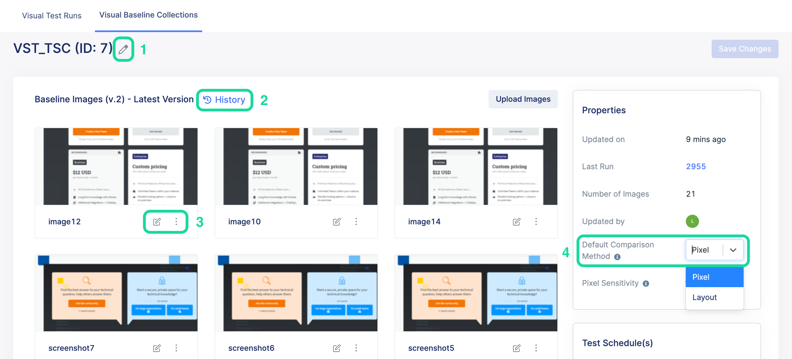

Access a baseline collection
To access a baseline collection, follow these steps:
- Sign in to Katalon TestOps and go to your project.
- Go to Visual Testing > Visual Baseline Collections.You will see all baseline collection IDs and their details (latest version, number of the baseline images in each baseline collection, and the test schedule that links to them).

- Click on the Baseline Collection ID you want to check.To customize the baseline collection, you can:
- Click on Pencil icon to edit the name of the baseline collection.
- Click History to see the older version of the baseline collection.
- Edit or delete each baseline image of this baseline collection.
- Select Pixel-based or Layout-based as the default comparison method for the baseline collection. Note:
- This feature is available on Visual Testing Professional (VTP) package.
- The default comparison method will determine the checkpoint status (such as Match or Mismatch) for all visual test runs that use the same baseline collection.